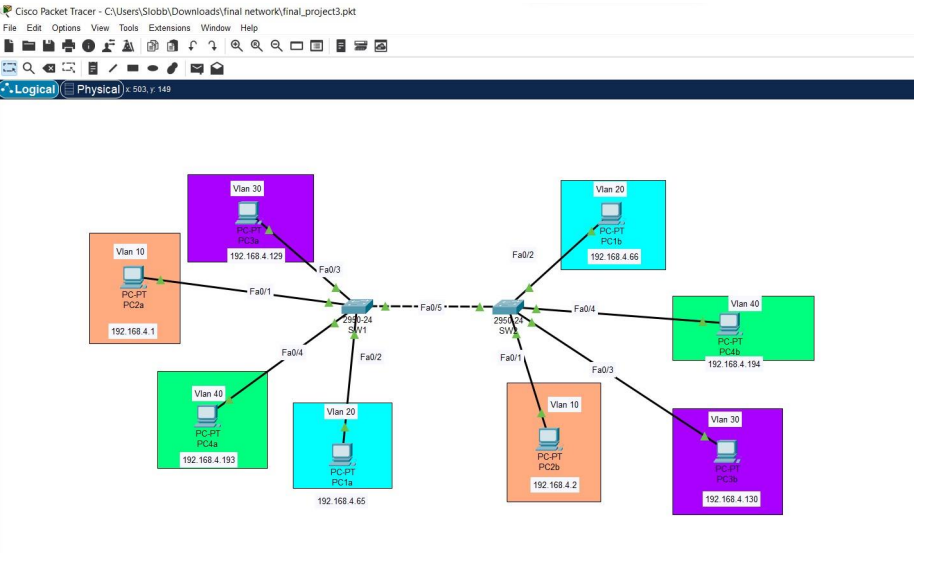
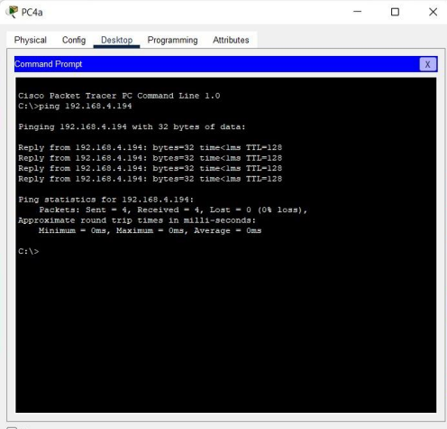
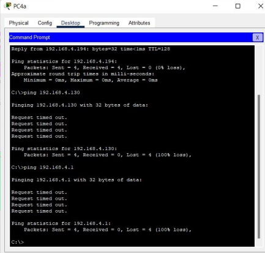

April 2022
This project demonstrates VLAN configuration, subnetting, and network security implementation.
Subnet Calculation
Using the host formula 2^(32-n)-2, I derived a subnet mask allowing 50 hosts and 4 VLANs. CIDR /26 results in subnet mask 255.255.255.192 with 62 usable IP addresses per subnet. Subnet ranges: 192.168.4.1-62, 192.168.4.65-126, 192.168.4.129-190, 192.168.4.193-254.
Network Diagram
Ping Tests
PC4a (VLAN 40) successfully pinging PC4b (VLAN 40):
PC4a (VLAN 40) unsuccessfully pinging PC3b (VLAN 30) and PC1a (VLAN 10):
Switch Configuration
Configuration file including all commands used to set up the switches:
! Switch base configuration enable secret MySecret123 hostname Switch1 ! Configure VLANs vlan 10 name Sales vlan 20 name Marketing vlan 30 name IT vlan 40 name HR ! Assign IP to management interface interface vlan 1 ip address 192.168.4.1 255.255.255.192 no shutdown ! Assign switch ports to VLANs interface range fa0/1 - 5 switchport mode access switchport access vlan 10 interface range fa0/6 - 10 switchport mode access switchport access vlan 20 interface range fa0/11 - 15 switchport mode access switchport access vlan 30 interface range fa0/16 - 20 switchport mode access switchport access vlan 40 ! Enable security on console and VTY lines line console 0 password MyConsolePass login line vty 0 4 password MyVTYPass login transport input ssh ! Enable port security interface range fa0/1 - 20 switchport port-security switchport port-security maximum 2 switchport port-security violation restrict switchport port-security mac-address sticky ! Save configuration end write memory
Network Security
VLANs separate devices at the data link layer, restricting communication between groups. This means that devices in one VLAN cannot directly communicate with devices in another VLAN without routing through a Layer 3 device, like a router or a Layer 3 switch. Subnetting further segments the network at the network layer, providing additional isolation and limiting the broadcast domain for each VLAN.
By properly configuring VLANs and access control, only authorized devices or users can communicate with other VLANs if necessary, using controlled routes or firewall rules. Switch security measures, such as setting login passwords and enabling secrets, protect against unauthorized access to the switch configuration.
Additionally, VLANs can improve security by containing broadcast storms, limiting the impact of malware, and enforcing network policies on a per-group basis. If a device needs to communicate with another VLAN, inter-VLAN routing must be explicitly configured, ensuring administrators control which traffic is allowed and can monitor it for suspicious activity.